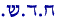

De Nieuwe Maan in de Hebreeuwse Bijbel
De bijbelse maand begint met de wassende Nieuwe Maan, het eerste zichtbare begin van een nieuwe cyclus. Het Hebreeuwse woord voor maand, t.w. Chodesj, betekent letterlijk "Nieuwe Maan" en heeft alleen in ruime zin betrekking op de periode tussen de éne Nieuwe Maan en de volgende.
In de Rabbijnse Midrasj staat dat wanneer God tegen Mozes zegt: "Deze maand geeft voor jullie het begin van de maanden aan". (Ex 12,2), God in de hemel naar de toenemende Nieuwe maan wees en zei: "Als je dit ziet, heilig! (= verklaar het een Nieuwe Maansdag)". Dit Rabbijnse sprookje geeft een belangrijk punt weer, namelijk dat de bijbel niet erg duidelijk is over de instructie om het begin van de maanden te baseren op de Nieuwe Maan. De reden hiervoor is dat de term voor "Maand" (Chodesj) zelf al impliceert dat de maand begint met de toenemende Nieuwe Maan. Voor alle Israëlieten die aanwezig waren, toen Mozes de profetieën van JHWH voorlas ten overstaan van de Kinderen van Israël, zal dit blijkbaar duidelijk zijn geweest en daarom was het niet noodzakelijk om meer licht op dit concept te laten schijnen dan nodig was aangaande termen zoals licht en donker. Vanwege de langdurige verbanning hebben wij echter het gebruik van het bijbels Hebreeuws in onze alledaagse taal verloren. Daarom zullen we de betekenis van het woord "Chodesj" moeten afleiden uit het gebruik ervan in diverse bijbelteksten middels juist gehanteerde linguïstische principes.
Hij maakte de Maan voor de Heilige Dagen
Er is geen twijfel over mogelijk dat de Heilige Dagen afhankelijk zijn van de maan. Het beste bewijs hiervoor is de passage in Psalmen 104,19 waar staat:
"Hij heeft de maan gemaakt voor Mo'edim (vastgestelde tijden)".
De Hebreeuwse term Mo'edim (vastgestelde tijden) is hetzelfde woord dat gebruikt wordt om de bijbelse Heilige Dagen te beschrijven. Leviticus 23, dat een opsomming bevat van de bijbelse feesten, begint met de verklaring: "De Mo'edim (vastgestelde tijden) van JHWH, heilige samenkomsten moeten jullie afkondigen in hun vastgestelde tijden (Mo'adam)". Dus, wanneer de Psalmist ons vertelt dat God de maan maakte voor Mo'edim (vastgestelde tijden) bedoelt Hij dat de maan gemaakt was om de tijd van de Mo'edim van JHWH, dwz de bijbelse Heilige Dagen, te kunnen bepalen.
"Chodesj" heeft betrekking op de Maan
Het bovenstaande vers leert ons, dat de Heilige Dagen gerelateerd zijn aan de maan. Maar toen de Thora werd gegeven was Ps. 104 nog niet door de Levietische profeet geschreven, en de vraag blijft dus bestaan hoe de oude Israëlieten dit konden weten.
Het antwoord is dat het Hebreeuwse woord voor maand (Chodesj) zelf al aangeeft dat er een verband bestaat tussen Chodesj en de maan. We kunnen dit verband in een aantal gevallen zien waarin het woord Chodesj als een substituut wordt gebruikt voor het woord "Jerach", het normale Hebreeuws woord voor maan, dat ook in ruime zin "maand" kan betekenen. Bijvoorbeeld:
"in de maand (Jerach) Bul, dat is de achtste maand (Chodesj).…". (1Kon. 6,38)
"in de maand (Jerach) Ethaniem, dat is de zevende maand (Chodesj).…". (1Kon. 8,2)
Nog een bewijs dat Chodesj betrekking heeft op de maan (Jerach) is de zinsnede: "Een Chodesj (maand) van dagen (een volle maand van 29 of 30 dagen)" (Gen. 29,14; Num 11,20-21). Dit betekent dus hetzelfde als de zinsnede "Een Jerach (maand/maan) van dagen" (Deut. 21,13; 2Kon. 15,13). Duidelijk is dus dat Chodesj gerelateerd is aan het woord "Jerach" dat letterlijk "maan" betekent.
"Chodesj" betekent Nieuwe Maan(sdag)
Eigenlijk betekent Chodesj in eerste instantie "Nieuwe Maan" of "Nieuwe Maansdag" en alleen in ruime zin kreeg het ook de betekenis van "maand", dwz de periode tussen de éne Nieuwe maan en de volgende. De primaire betekenis is bewaard gebleven in een aantal passages zoals 1Sam. 20,5 waarin Jonatan tegen David zegt: "Morgen is het de Nieuwe Maan (Chodesj)". Duidelijk is dat in dit vers het woord "Chodesj" wordt gebruikt om te verwijzen naar de specifieke dag waarop de nieuwe maan begint en niet naar de hele maand.
Een andere passage waarin het woord "Chodesj" staat in zijn primaire betekenis is Ezech. 46,1 dat gaat over "de nieuwemaansdag (Ha-Chodesj)". Met Chodesj wordt hier de dag waarop een bepaalde gebeurtenis plaatsvond bedoeld. Deze dag is de Nieuwemaansdag.
De bijbelse Nieuwe Maan is "de eerste was"
"Chodesj" is afgeleid van de stam CH.D.SJ.

hetgeen "nieuw" of "nieuw maken / vernieuwen" betekent. De wassende Nieuwe Maan wordt Chodesj genoemd, omdat het de eerste keer is dat de maan opnieuw wordt gezien, nadat hij aan het eind van de maancyclus enkele dagen verborgen was geweest. Aan het eind van de lunaire maand bevindt de maan zich dichtbij de zon(1) en zal hij uiteindelijk het conjunctiepunt bereiken wanneer hij tussen de zon en de aarde doorgaat. Als resultaat daarvan zal rond de tijd van de conjunctie heel weinig tot niets van het verlichte oppervlak van de maan op de aarde gericht zijn en is de maan niet zichtbaar door het vele malen grotere lichtschijnsel van de zon.Wanneer de maan voorbij de zon schuift beweegt hij zich in de richting van de andere zijde van de aarde. Naarmate de maan zich verder van de zon af beweegt neemt het percentage van het verlichte oppervlak dat vanaf de aarde zichtbaar is toe. Op één avond van de maand is de maan direkt na zonsondergang weer opnieuw te zien nadat hij gedurende 1 ½ tot 3 ½ dag onzichtbaar was gebleven.
Omdat de maan opnieuw gezien kon worden na een periode van onzichtbaarheid, noemde men het vroeger een "Nieuwe Maan" ofwel "Chodesj" (afgeleid van het woord "chadasj" dat "nieuw" betekent).
Wassende Nieuwe Maan versus Astronomische Nieuwe Maan
Veel mensen zijn op een dwaalspoor gebracht door het onjuiste gebruik in de moderne talen van de term "Nieuwe Maan". Moderne astronomen hebben deze wat ongebruikelijke term aangenomen om te verwijzen naar de conjunctie (wanneer de maan tussen de aarde en de zon doorgaat en de maan niet vanaf de aarde zichtbaar is), hoewel die term altijd betrekking had op het eerste zichtbare streepje van de maan. De astronomen realiseerden zich al snel dat het onnauwkeurige gebruik van de term "Nieuwe Maan" om naar de conjunctie te verwijzen tot verwarring kon leiden en begonnen onderscheid te maken tussen de "Astronomische Nieuwe Maan" en de "Wassende Nieuwe maan". De astronomische Nieuwe Maan heeft dus betrekking op de conjunctie. De term "Wassende Nieuwe Maan" daarentegen verwijst naar de oorspronkelijke betekenis van het woord, de maan waarvan slechts een kleine streepje van de schijf zichtbaar is.
Een goed woordenboek zou beide betekenissen moeten weergeven.
Het veronderstelde bewijs van een "Verborgen Maan"
In verwarring gebracht door de term "Nieuwe Maan" door de moderne Astronomie hebben sommige mensen bijbelse ondersteuning gezocht voor de onjuiste betekenis van deze term. Daarbij wordt vaak Ps. 81,3 aangehaald:
"Blaast de bazuin op de Chodesj (Nieuwe Maan), op de Kese (Volle Maan) voor de dag van onze Chag (Feest)".
Volgens de "Verborgen Maan Theorie" is de term "Kese" afgeleid van de stam K.S.J. dat "bedekken" betekent en zou daarom "bedekte maan" of "verborgen maan" betekenen.
Volgens deze interpretatie betekent Ps. 81,3: "Blaas de bazuin op de dag van de Verborgen Maan".
Men vergeet echter om het tweede gedeelte van het vers erbij te betrekken "voor de dag van onze Chag". Het woord "Chag" (Feest) is een term die altijd verwijst naar één van de drie jaarlijkse Pelgrimsfeesten (Matzot, Shavuot en Soekkot, zie Ex. 23 en 34).(2) Een Nieuwe Maansdag staat niet bekend als een "Pelgrimsfeest", zodat Kese / Chag en de Nieuwe Maansdag (Chodesj) niet synoniem met elkaar kunnen zijn.
Ook is verondersteld dat Kese verwijst naar de bijbelse feestdag Jom Terua (de Dag van Geroep) die altijd op een Nieuwe Maansdag valt. De bijbel beschrijft Jom Terua als een Mo'ed (vastgestelde tijd) en nooit als een Chag (Pelgrimsfeest), zodat Kese / Chag ook niet naar Jom Terua kan verwijzen.
Wat betekent "Kese" werkelijk?
Het is waarschijnlijk dat Kese verwant is aan het Aramese woord "Kista" en het Assyrische woord "Kuseu" dat "volle maan" betekent (zie Brown-Driver-Briggs blz. 490b). Hebreeuws, Aramees en Assyrisch zijn allen semitische talen en delen vaak dezelfde stam. Deze uitleg sluit precies aan bij de beschrijving van Kese als de dag van de Chag, aangezien twee van de drie Pelgrimsfeesten op de 15de van de maand vallen, wanneer het volle maan is (Chag HaMatzot en Chag HaSoekkot).
Meer over de "Verborgen Maan"
Nog een punt ter overweging, in feite is er geen specifieke verborgen maansdag. De maan blijft namelijk in het Midden-Oosten tussen de 1 ½ en 3 ½ dag verborgen. Men ging er vanuit dat de "dag" waarop de maan verborgen is eigenlijk de dag van de conjunctie is. Het probleem met deze gedachte is dat pas 1000 jaar na Mozes de Babylonische astronomen ontdekten hoe het moment van de conjunctie berekend kon worden. Daarom konden de oude Israëlieten niet weten op welk moment de conjunctie plaats vond en zouden zij niet hebben geweten op welke dag zij de "Verborgen Maan" moesten vieren.
Verondersteld is dat de oude Israëlieten naar de "Oude Maan" konden kijken en zo de Dag van de Conjunctie konden bepalen op het moment dat de Oude Maan niet meer in de ochtend zichtbaar was. Zo'n methode zou echter in het Midden-Oosten geen enkele zin hebben, aangezien de zogenaamde "Verborgen Maanperiode" wel 3 ½ dag kan duren. Het is in feite de normaalste zaak van de wereld dat een maan gedurende 2 ½ dag verborgen blijft. Hoe zouden de oude Israëlieten hebben geweten wat exact de Dag van de Conjunctie was?
Aan de andere kant waren de oude Israëlieten zich wel bewust van de Wassende Nieuwe Maan. In tijden van weleer werkten de mensen van zonsopgang tot de avondschemering en hen zal wel opgevallen zijn dat de Oude Maan in de ochtendhemel steeds kleiner werd. Zodra de ochtendmaan verdwenen was bleven zij ongetwijfeld in spanning afwachten totdat 1 ½ - 3 ½ dag later de maan opnieuw in de avondhemel verscheen. Nadat de maan enkele dagen verdwenen was geweest verscheen hij opnieuw in de vroege avondhemel. Zij noemden hem dan ook de "Nieuwe Maan" ofwel "Chodesj".
Voetnoot 1: Vanuit het perspectief van een persoon op aarde
Voetnoot 2: Er zijn een aantal verzen in de Tanach waarin het woord Chag niet verwijst naar de drie bijbelse Pelgrimsfeesten, maar dan verwijst het naar niet-bijbelse pelgrimsfeesten. In Richt. 21,19 bijvoorbeeld verwijst Chag naar het jaarlijkse Pelgrimsfeest dat te Silo werd gehouden. In Ex. 10,9 vertelt Mozes aan de Farao dat de Israëlieten Egypte moeten verlaten om een Feest voor JHWH te vieren in de woestijn. Het gaat dus duidelijk om een Pelgrimsfeest. Opvalt is dat Mozes zegt dat zij een Chag hebben, hetgeen betekent dat zij een Pelgrimstocht moeten maken, in dit geval naar de berg Sinaï en dat zij daarom Egypte moeten verlaten om de Chag op de juiste manier te vieren.
Copyright © 2000
van The Karaite KornerOnderwijs van Hakham Meir Rekhavi